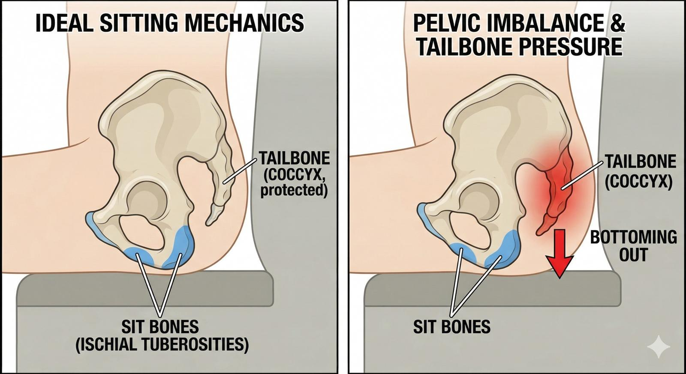

連好好坐著都好難？「尾椎頂到椅子」的沉重壓迫感，不該被忽略的骨盆活動力學！
【 連好好坐著都好難？「尾椎頂到椅子」的沉重壓迫感，不該被忽略的骨盆活動力學！ 】
如果你曾經有過「尾椎痛」的經驗，你一定懂那種折磨：坐立難安、買了無數個中空坐墊、照了 X 光醫生卻說骨頭沒裂沒斷。
於是，開始瘋狂熱敷屁股、用按摩球死命滾壓尾椎周圍，想消除那種「尾椎直直頂著椅子」的強烈壓迫感。結果呢？痛感依舊如影隨形。
為什麼越放鬆反而越痛？因為可能從一開始就「找錯兇手」了。
📍 尾椎是無辜的，它只是被迫出來「代班」
人體在坐下時，最理想的受力點是屁股下方兩塊硬硬的「坐骨結節」。它們就像是人體內建的兩支板凳腳，負責穩穩撐住上半身的重量。
但如果人體的地基——「骨盆」發生了力學上的失衡、傾斜或翻轉，這兩支板凳腳的角度就會跑掉。這時候，原本躲在安全弧度裡的「尾椎」，就會被迫跟著偏移，卡住的骨盆，直接被迫尾椎去撞擊椅面。
想像一下，拿身體最脆弱的尾巴骨去當避震器，壓迫感怎麼可能不重？
📍 牽動骨盆的「隱形鋼索」：腰大肌
那麼，常見把骨盆拉歪的兇手之一是誰？答案往往出乎意料——它不在背後，而在你的腹部深處。
這條肌肉叫做「腰大肌 (Psoas major)」。它非常粗壯，一路從你的腰椎兩側往下穿過骨盆，連接到大腿骨。當你長期坐姿不良、核心無力，或是曾經有過舊傷，這條腰大肌就會緊縮變短。
受傷的腰大肌就像一條繃緊的隱形鋼索，從前面死死拉住你的腰椎與骨盆，迫使骨盆產生旋轉。地基一歪，尾椎自然就跟著遭殃，連帶還會引發腰部與右側臀部的代償性痠痛。
👨⚕️ 診間裡的真實逆轉
這週，一位受尾椎壓迫與腰臀痠痛折磨一年多的年輕女孩來到診間。她做過很久的復健與徒手治療，但那種「一坐下就被頂到」的刺痛感始終沒有解決。
理學評估後與脈象資訊分析，我沒有在她疼痛的尾椎上大作文章，而是反其道而行：
往腹部深處找： 先透過乾針治療，精準釋放那條緊繃死鎖的「腰大肌」。
重置地基： 解除前方拉力後，在運用徒手技巧，順勢將錯位、翻轉的骨盆重新校正復位。
這週回診時，她笑著說：「醫師，那個頂住的壓迫感幾乎沒有了！日常活動完全不會痛！真的改善超多！」雖然久坐後臀部中央偶爾還會有一點微痠，但只要起身活動就能立刻緩解。
💡 醫師的結構筆記
人體是一個互相牽扯的張力網路。很多時候，你感覺痛的地方，往往只是力學失衡下的受害者；真正的加害者，通常躲在疼痛的對立面。
痛在後面，我們要往前面找；痛在下面，我們可能要往上面看。
下次如果尾椎又在抗議，別再只盯著屁股看了。找回骨盆的力學平衡，把隱形的鋼索鬆開，身體自然會把「好好坐下」的權利還給你！
#尾椎痛 #腰大肌 #骨盆錯位 #薦髂關節 #下背痛 #久坐痠痛 #精準乾針 #中醫徒手
太初中醫診所 東門中醫
中醫師 黃彥鈞
－
📚 實證醫學參考 (References)：
Maigne, J. Y., et al. (2000). Spine. (指出尾椎痛的成因高度關聯於骨盆坐姿力學角度的改變，骨盆活動度異常會導致尾骨承受過度剪力。)
Bogduk, N., et al. (1992). Clinical anatomy of the lumbar spine and sacrum. (解剖學闡明：腰大肌的張力異常會直接改變腰椎前凸與骨盆傾斜度，破壞骨盆帶生物力學平衡，引發遠端牽連痛。)
(註：本文分享之臨床案例皆已嚴格去識別化與隱私保護處理。每位患者的身體結構與疼痛成因皆屬獨特個案，若有任何急性或慢性疼痛，請務必尋求受過正規訓練之專業醫師進行當面評估與完整鑑別診斷。)
